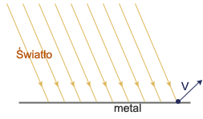

Zjawisko fotoelektryczne zewnętrzne

Zjawisko fotoelektryczne zewnętrzne polega na wybijaniu elektronów z metalu pod wpływem światła lub promieniowania ultrafioletowego. Na podstawie różnego rodzaju doświadczeń, można wysunąć następujące wnioski:
- liczba elektronów emitowanych z katody jest wprost proporcjonalna do natężenia padającego na fotokatodę światła
- dla każdego metalu istnieje pewna częstotliwość graniczna, poniżej której zjawisko nie zachodzi
- prędkość wybijanych przez światło elektronów nie zależy od natężenia padającego na fotokatodę światła, zależy od częstotliwości tego światła
Zjawisko fotoelektryczne wyjaśnił Einstein w oparciu o teorię korpuskularną. Światło jest strumieniem cząstek, tzw. fotonów, z których każdy posiada energię:
h - stała Plancka ( )
Elektron w metalu związany jest pewnymi siłami i aby go wybić trzeba wykonać pewną pracę (pracę wyjścia):
- częstotliwość graniczna
Foton uderzając w elektron zużywa część swojej energii na pracę wyjścia, resztę przekazuje elektronowi. Foton wtedy przestaje istnieć.
Jest to wzór Einsteina-Millikana.
FOTON
- kwant światła
- prędkość
- masa spoczynkowa
- energia
- pęd
Twierdzenie L. de Broglie'a
Promieniowanie elektromagnetyczne ma naturę dwoistą. W pewnych zjawiskach, jak np. odbicie, załamanie, a szczególnie ugięcie, interferencja czy polaryzacja, ma naturę falową, zaś w zjawisku fotoelektrycznym zewnętrznym, czy też w zjawisku Comptona (dla promieni Rentgena), ma naturę korpuskularną (cząsteczkową).
TWIERDZENIE L. DE BROGLIE'A
|
Doświadczalne powtwierdzenie hipotezy postawionej przez Broglie'a nastąpiło w 1927 roku (tj. w trzy lata po postawieniu tej hipotezy). Obliczenia wykazały, że elektronom o energii około 200eV odpowiada fala o długości porównywalnej z długością promieni X, a jednocześnie są to długości porównywalne z odległościami międzyatomowymi. Takie fale, podobnie jak promienie X, ulegają dyfrakcji na naturalnych siatkach, jakimi są kryształy.
Gdy wiązkę elektronów przepuszczono przez cienką folię ze złota, a następnie skierowano na ekran reagujący na padające nań elektrony, otrzymano obraz składający się z plamek jasnych i ciemnych, czyli obraz dyfrakcyjny, podobny do obrazu otrzymywanego przy przejściu światła przez maleńkie otworki lub przy przejściu promieni X przez kryształ.
Zasada nieokreśloności Heisenberga
Zasada nieoznaczoności (zasada nieokreśloności) mówi, że niepewność zawsze będzie częścią każdego przewidywania dokonanego przez naukę. Postęp może ją tylko zmniejszać aż do pewnej granicy. Nieoznaczoność nigdy nie będzie równa zeru. Dla niektórych problemów nie da się dokładnie wyliczyć, co się stanie w przyszłości.
Zasada nieoznaczoności mówi, że nie można z dowolną dokładnością wyznaczyć jednocześnie położenia i pędu cząstki. Odkryta i sformułowana przez Wernera Heisenberga w 1927 roku, jest konsekwencją dualizmu korpuskularno-falowego. Matematyczna postać zasady:
- nieokreśloność pomiaru położenia (wariancja położenia)
- nieokreśloność pomiaru pędu (wariancja pędu)
h - stała Plancka
Zasada ta jest uogólniana na inne pary (kanonicznie sprzężonych) wielkości fizycznych, np. czas i energię - nie można z dowolną dokładnością wyznaczyć jednocześnie czasu życia nietrwałej cząstki i energii stowarzyszonej z nią fali de Broglie'a.
Ważne jest by podkreślić, że nieokreśloność pomiaru położenia i pędu nie jest błędem pomiarowym wynikającym z niedoskonałości urządzeń lub metod pomiarowych, ale rozrzutem wyników (wariancją) wynikającym z istoty samego pomiaru lub istoty samej mechaniki kwantowej (interpretacja Kopenhaska).